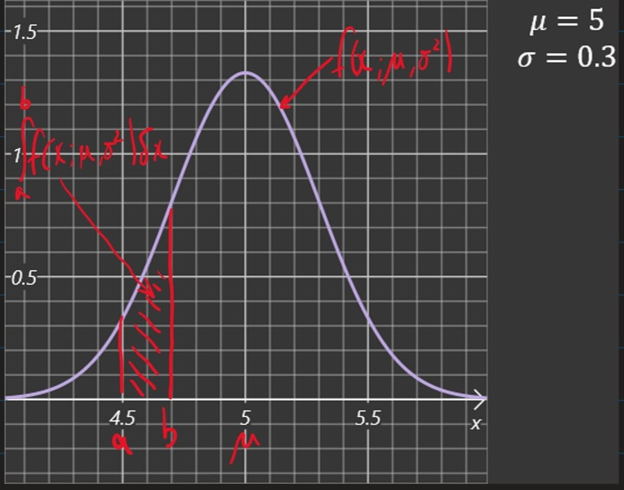
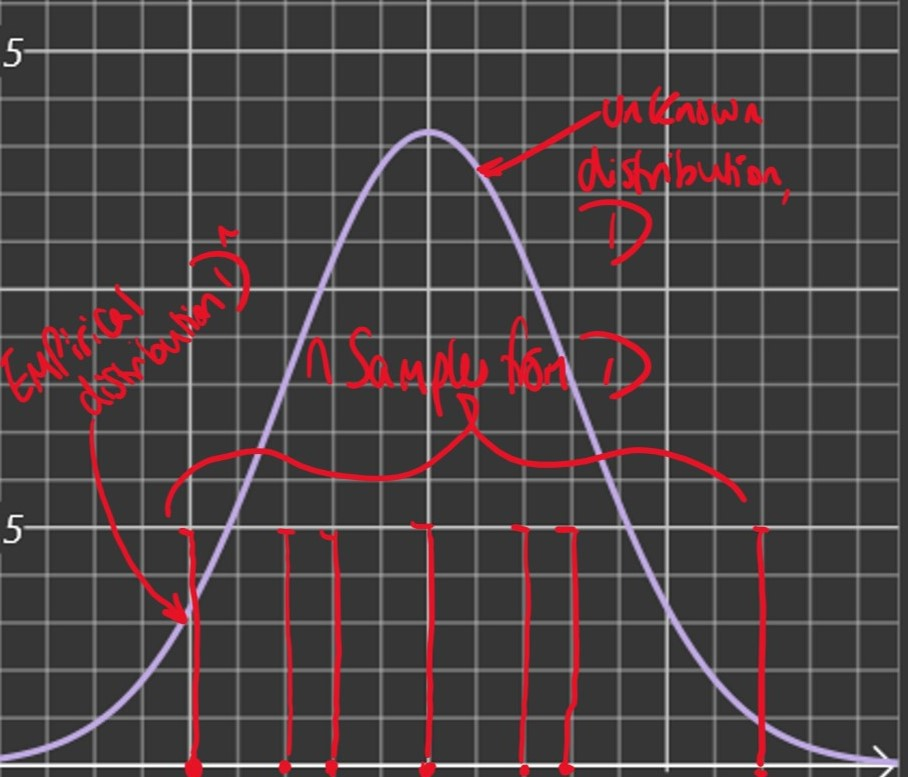

Lecture 3: Maximum Likelihood
- So far we have considered a deterministic model, $f(x) = wx$
- However, we can see that there is variation in the data for each value of $x$
- A probabilistic model can account for this variance
- e.g. $F(x) = wx + N$
- where:
- $N \sim \mathcal{N}(0,\sigma^2)$
- is a noise term
- $F(X)$ is a random variable which can be described by a conditional density $P(y | x, w)$
An aside into basic probability
Probability Density Functions
- A random variable takes a value that depends on a random phenomenon
- The density function ofa continuous random variable $X$ is a function $p : \R \rightarrow \R$ s.t.
- $\int_a^b p(x) \delta x = Pr(a \leq x \leq b) $

- The normal distribution has the probability density function
(1)
$$f(x ; \mu , \sigma^2) = \frac{1}{\sqrt{2\pi \sigma^2}}\exp(-\frac{(x - \mu)^2}{2\sigma^2})$$
- Where $\mu$ and $\sigma^2$ are the parameters of the distribution.
Expectation
- The expected value of $f(x)$ when $x$ is a random variable with p.d.f $P$ is
(2)
$$\mathbb{E}{x\sim P}[f(x)] = \int{-\infin}^{\infin} P(x)f(x) \delta x$$
Joint Distributions and Independence
- The joint density function of $n$ random variables $x_1, \cdots, x_n$ is a function $P : \R^n \rightarrow \R$ s.t.
(3)
$$\int_D P(x_1,\cdots, x_n)\delta x_1 \cdots \delta x_n = Pr((x_1 ,\cdots, x_n)\in D)$$
for any $n$-dimensional domain $D \subseteq \R^n $
if $x_1,\cdots, x_n$ are $n$ independent random variables with density functions $P_1, \cdots, P_n$ and joint density $P$ then
(4)
$$P_{\theta}(x_1,\cdots, xn) = \prod{i=1}^n P_{\theta}(x_i)$$
Empirical Distribution
- Given $n$ independent samples $X_i, \cdots, X_n$ from an unknown distribution, $\mathcal{D}$, we can construct an approximation of $\mathcal{D}$ by uniformly sampling from the set ${X_1, \cdots, X_n}$

- Given $X_1, \cdots , X_n$ initial samples from $\mathcal{D}$, the empirical distribution of $\mathcal{D}$ has the density function:
(5)
$${Pr}^n(x) := \frac{1}{n}\sum_{i=1}^{n} \delta(X_i - x)$$
- Where $\delta$ is the Divac delta i.e. $\delta(x) = 0$ for $x\neq 0$ and $\int_{-\infin}^\infin \delta(x) \delta x = 1$
Note: $\mathbb{E}{X\sim{Pr}^n}[f(X)] = \frac{1}{n}\sum{i=1}^n f(X_i)$
The Learning Task, $T$
- Instead of deterministically predicting an output $y$ for a given input $x$ we will now train a probabilistic model represented by a conditional density function
(6)
$$P_{model}(y | x ; \theta)$$
Where:
- $y\leftarrow$ density function of output
- $x\leftarrow$ input
- $\theta \leftarrow$ parameter of model
Given training data and a family of probability models we need to choose the parameter(s) $\theta$ which are most appropriate for the data. We call this the Maximum likelihood estimate
Likelihood function
- Given independent training data $(x_1,y_1), \cdots, (x_n,yn)$ and a probabilistic model $P{model}$ with parameter $\theta$, the likelihood function is defined as:
(7)
$$\mathcal{L}(\theta; (x_1,y_1), \cdots , (x_n,yn)) := \prod{i=1}^n P_{model}(y_i | x_i ; \theta)$$
- $\mathcal{L}(\theta; …)$ is the likelihood that the observed data came from the model with parameter $\theta$
Maximum Likelihood Estimate (MLE)
- Given training data and a family of models indexed by the parameter $\theta$, which of the models are most likely to have produce the data?
(8)
$$\Theta{MLE} := \argmax\theta \mathcal{L}(\theta; (x_1,y_1),\cdots, (x_n,yn)) = \argmax\theta \prod{i=1}^n P{model}(y_i | x_i; \theta)$$
Log-Likelihood
- For numerical and analytical reason, a convenient reformation is:
(9)
$$\Theta{MLE} = \argmax\theta \mathcal{L}(\theta)
= \argmax\theta \log \mathcal{L(\theta)} \
= \argmax\theta \log \Pi{i=1}^n P{model}(y_i | xi ; \theta)
= \argmax\theta \sum{i=1}^n \log P{model} (y_i | xi ; \theta) \
= \argmin\theta \frac{1}{n}\sum{i=1}^n -\log P{model} (y_i | xi ; \theta) \
= \argmin\theta \mathbb{E}{(\mathcal{X},\mathcal{Y})\sim \mathcal{D}^n} - \log P{model} (\mathcal{Y} | \mathcal{X} ; \theta) $$
Learning via Log-Likelihood
- Neural network models are often trained by minimising the negative log-likelihood of the model given the training data, i.e. by minimising:
(10)
$$J(\theta) = \mathbb{E}{\mathcal{X},\mathcal{Y}\sim \mathcal{D}^n}- \log P{model}(\mathcal{Y | X} ;\theta)$$
- Where:
- $J(\theta)\leftarrow$ Cost function
- $\theta \leftarrow$ model parameter(s)
- $\mathcal{D}^n \leftarrow$ empirical distribution of data